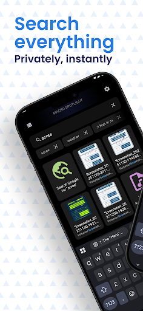
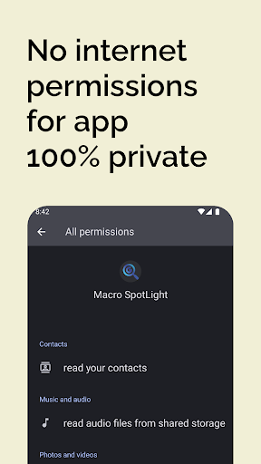
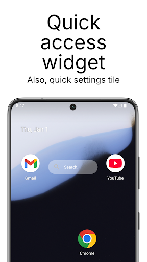

1. The Problem with Default Android Cloud Search
Take a look at the search bar at the bottom or top of your Android phone screen. If you tap it and type "Spotify", what happens?
- Cloud Latency: Your phone sends a network request to Google servers for autocomplete suggestions before it even checks whether Spotify is already installed on your device.
- Sponsored Ads & Web Clutter: Instead of immediately opening the app you own, your screen is flooded with Google search results, shopping links, trending news topics, and video carousels.
- Privacy Invasion: Every single keystroke—including private contact names, family phone numbers, and local file searches—is logged by remote analytics.
When you want to launch an app, call your mom, or open a downloaded PDF, you don't need a global web search engine. You need an on-device local indexer that responds in single-digit milliseconds.
2. What Makes Apple Spotlight & GNOME Search So Addictive?
Mac users and Linux desktop enthusiasts love macOS Spotlight and GNOME Shell Search because of a simple philosophy:
"Press a key, type two letters, hit Enter, and your app or file is open."
There is zero scrolling through sprawling app drawers, no hunting through multi-page folders, and zero loading spinners. Everything is indexed locally on the machine. Bringing this desktop-speed muscle to Android revolutionizes how quickly you navigate your phone.
3. Meet Macro Spotlight: 100% Offline On-Device Search
Macro Spotlight by GiantTurtle Studio was built to bring that exact uncompromising speed and desktop elegance to Android.
Macro Spotlight is built on three core pillars:
- Zero Internet Permission: The app does not request or possess the
android.permission.INTERNETpermission. It is physically impossible for the app to send data to the web. - Near-Zero Latency: Employs high-performance local SQLite and trie indexing. Search results update in real-time with each keystroke.
- Unified Search Scope: Search applications, contacts (call/SMS with one tap), device settings, and files simultaneously.



4. Universal Access: Quick Settings Tile & Home Widget
One of the biggest pain points of mobile search is having to return to your home screen every time you want to find something.
Macro Spotlight solves this with a native Quick Settings Tile:
- Swipe down your notification shade from inside any app (e.g. while watching a YouTube video or reading an article).
- Tap the Macro Spotlight tile.
- A sleek search modal opens instantly on top of your screen. Find your contact or document, and dismiss it without losing your place!
Prefer a home screen setup? Macro Spotlight includes a minimalist, customizable search widget that replaces the bloated Google search bar.
5. Built-in Utilities: Instant Math & Conversions
Just like Spotlight on macOS or Alfred on desktop, Macro Spotlight turns your search bar into an instant calculation engine:
- Fast Math: Type
(45 * 12) / 3or15% of 85, and the answer appears immediately above your keyboard—no need to launch the Calculator app. - Measurement Conversions: Type
150 km in milesor72 F in Cfor instant offline conversions.
Configure Macro Spotlight to automatically summon the software keyboard the moment the search bar opens. Combined with physical keyboard shortcuts on tablets or foldables, you can launch any app in less than half a second!
6. Comparison: Google Search vs. Nova/Sesame vs. Macro Spotlight
| Search Capability | Stock Google Bar | Traditional Launchers / Sesame | Macro Spotlight |
|---|---|---|---|
| Internet Requirement | Always Required | Required for features | 100% Offline (No Internet Perm) |
| Speed / Latency | Slow (Network dependent) | Moderate | Sub-millisecond Instant |
| Ads & Sponsored Links | High (Promoted content) | Varies | Zero Ads • Zero Sponsored |
| Quick Settings Tile Access | No | Rare | Native Notification Tile |
| Launcher Independent | Locked to Pixel/OEM | Requires specific launcher | Works on ANY Launcher |
7. Frequently Asked Questions
Yes. By installing Macro Spotlight, you gain the same instant, keyboard-driven on-device search across apps, contacts, and files that Mac and iPhone users enjoy.
No. The app does not declare the internet permission. It operates completely offline, guaranteeing that your personal contacts, search queries, and files never leave your device.
No. Macro Spotlight is completely launcher-agnostic. It works alongside Samsung One UI Home, Google Pixel Launcher, Nova, Niagara, or any other home screen setup.
Macro Spotlight is extremely lightweight (under 10 MB). Because it doesn't run background network sync or analytics telemetry, its idle battery consumption is 0%.
Stop Scrolling. Start Finding.
Upgrade your Android navigation with desktop-class speed. Say goodbye to sponsored search suggestions and sluggish app drawers with Macro Spotlight.